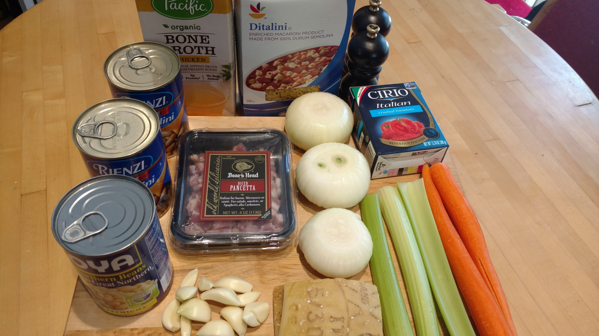
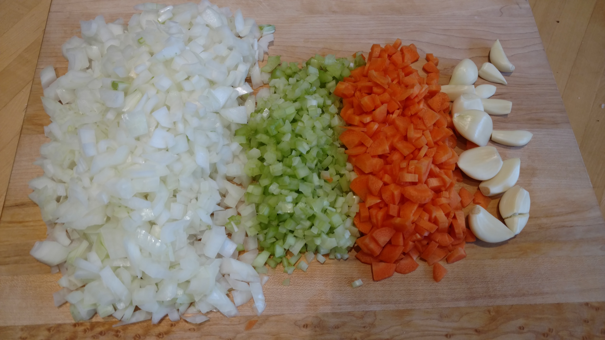
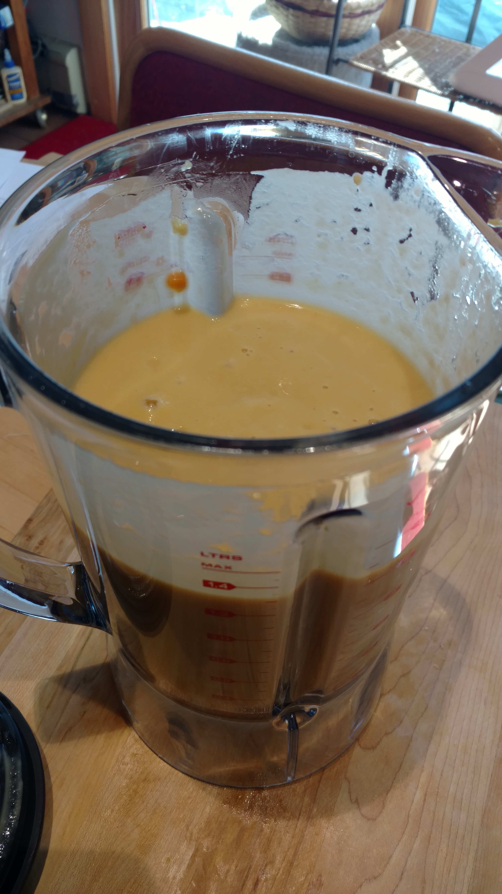
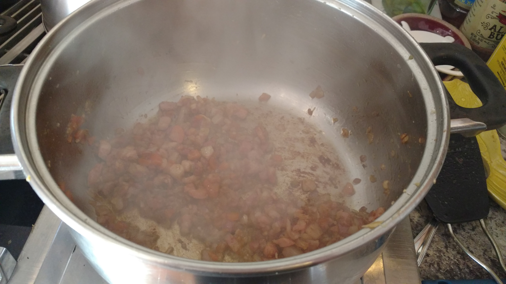
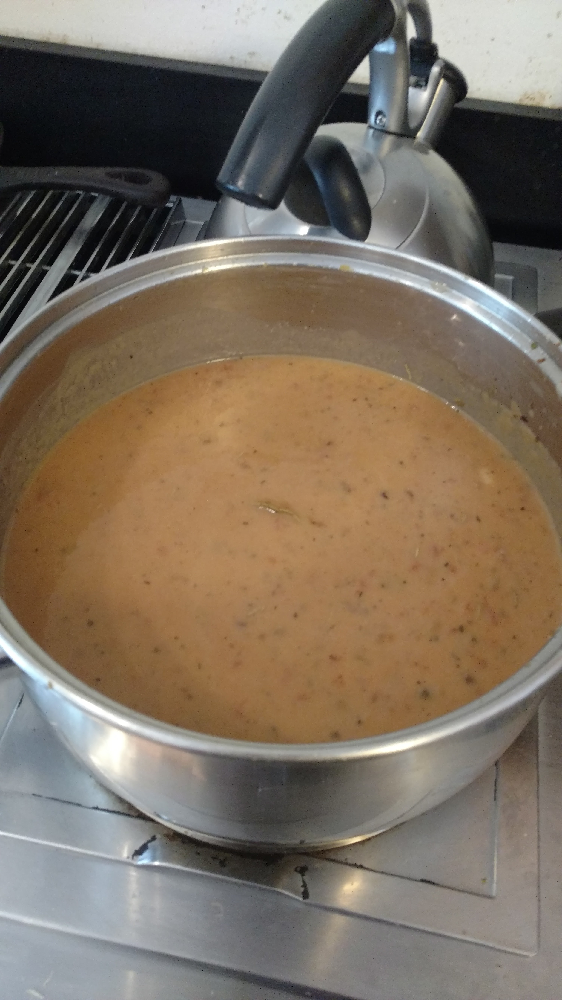

This soup is the real deal- the traditional broth is thick and creamy, and the flavor from Parmesan rind makes it heavenly. This is a traditional version of the recipe, not the kind you find at Olive Garden. This soup came our phemoninally, defintely one of the best!
I love how colorful the veggies are when they are all chopped up. The whole head of garlic lends a ton o flavor to the soup.
I sauteed everything together until it's nice and soft. As sual, I turn then up to high and stir often until the water cooks off, then turn the heat down to medium and let them finish doing their thing. After that,, you take out 2/3 of the vg and put it into the blender with the beans.
Blend it all up, and throw the pancetta in with the remaining veg.
Once you've got all the inggredients together, add in the rind and bay leaf. After some simmering time, you pull them out.
With a nice parmesan garnish, enjoy the soup with some warm crusty bread. Nothing is better!